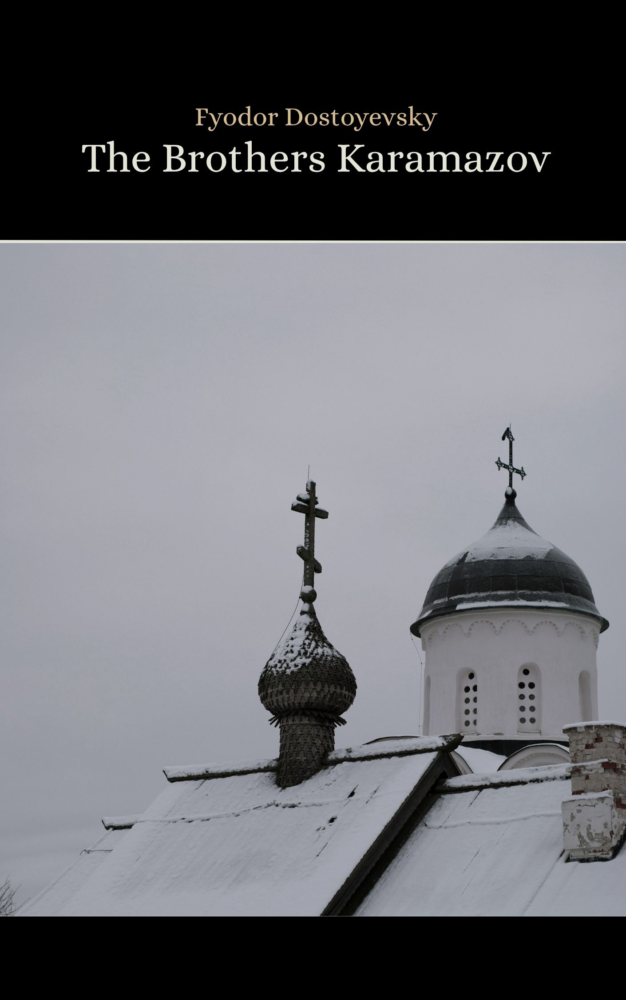

Cover image: made with Canva
The Brothers Karamazov
✦ 1880 • Philosophical Novel • Public Domain ✦
Dostoevsky's final novel, completed just months before his death in 1881, is widely regarded as one of the greatest works of literature ever written. Set in 19th-century Russia, The Brothers Karamazov follows the three sons of the dissolute landowner Fyodor Pavlovich Karamazov — the passionate Dmitri, the intellectual Ivan, and the devout Alyosha — as they are drawn into a web of parricide, passion, and moral crisis.
At its core, the novel is a profound inquiry into faith, free will, suffering, and the existence of God. Ivan's philosophical rebellion against divine order, expressed in his haunting poem "The Grand Inquisitor," stands as one of literature's most devastating challenges to religious belief. Yet Dostoevsky answers it not with argument, but with the quiet, luminous presence of Alyosha — a counterpoint built on love rather than logic.
⇓ Download PDF